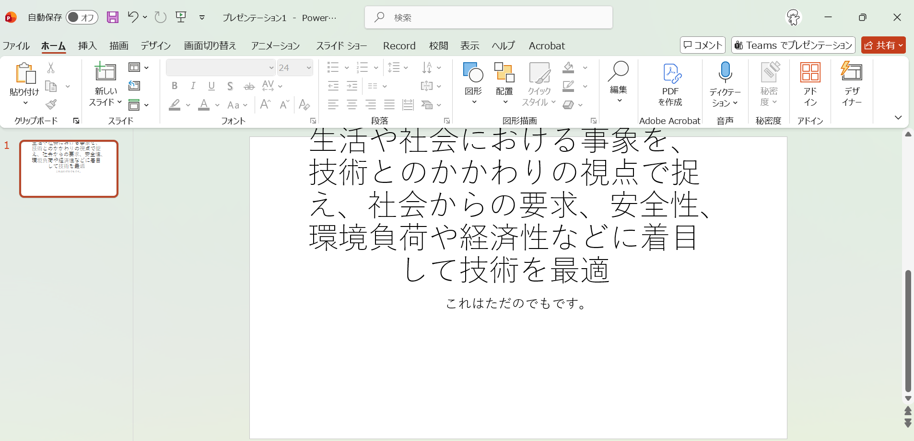

グループで同じファイルを共同編集する
グループ発表のパワポをメンバーごとに作って、最後に一つへまとめるのはけっこう面倒です。私なら、OneDriveにファイルを一つ置いて、全員が同じファイルを開くようにします。WordやExcelでも同じやり方です。
OneDriveでメンバーに共有する
- 大学のOneDriveに、共同で使うWord・Excel・PowerPointのファイルを保存します。
- エクスプローラーの左側から大学のOneDriveを開き、授業フォルダーにあるファイルを開きます。Word・Excel・PowerPointの画面右上にある「共有」を押します。
- 宛先欄でメンバーの大学アカウントを探します。学籍番号＋末尾の英字1文字（例：
A99-1234a）が分かれば、宛先候補を探せます。表示された名前を確認して選び、一緒に書くなら「編集可能」、見てもらうだけなら「表示可能」にします。 - 招待を送ります。共有リンクをグループのチャットに貼る場合も、送る前にリンクを開ける相手と権限を確認しておきます。

全員が同じリンクを開く
Word・Excel・PowerPointの「共有」から招待を送ると、相手の大学メール（Outlook）に招待メールが届きます。受け取った人は、メールのリンクから大学アカウントで共有ファイルを開いてください。作業するときは全員が同じ共有ファイルを開くと覚えておけばOKです。
同じテキストボックスを同時に編集すると、変更が競合しやすいです。 PowerPointなら「私は2〜3枚目」「そっちは4枚目から」みたいに、先に担当を決めておくと楽です。Wordなら章ごと、Excelならシートやセルの範囲で分けられます。相手が開けない、あるいは編集できないときは、まず相手のアカウントと共有権限を確認してください。